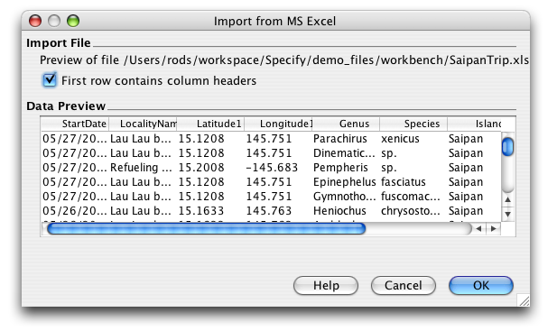
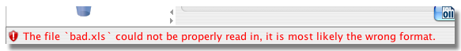

The WorkBench can easily import data from an MS Excel file into a new Data Set.
To begin, click on the Import Data action on the Sidebar. A file dialog will appear to select the import file.
To properly import the data from an MS Excel file, the WorkBench must first determine if the data includes column headings. The following information dialog appears after the file dialog:

Import from MS Excel
The Data Preview window reads and displays a sample of the column headings and data from the import file. If the file does not contain column headings, then none will display. Check the 'First row contains column headings' box according to how the file displays in the Data Preview window.
***do we need to have a note here about a bad file?***
The column headings in the import file must now be 'mapped' to the fields in Specify. This is achieved using the Column Mapping Editor.
A file with Column Heading names will map differently in the editor than a file without Column names, both instances are described below.
The Workbench includes an 'auto-mapping' feature which identifies matching column headings and 'maps' them to matching Specify Fields. If all the column headings are matched to field the Data Set Mapping Editor will appear much like this:
Column Headings Automapped in the Data Set Mapping Editor
The column headings from the import file appear under 'Data Set Columns' on the right side of the dialog and the 'Specify Fields' appear on the left.
Column headings that have not been automapped will show 'To Be Discarded' under 'Specify Fields' in the window. This column heading will need to be automapped using the
No Column names appear in the 'Unmapped Imported Columns' window of the dialogue as they have all been automapped. The Field names that have been mapped will appear with a (check) beside them indicating that they are unavailable.
To unmap a Column to a Field:
The Column name will then appear in the 'Unmapped Imported Columns' window and the Field name will become available in the Specify window.
To remap a Column to a Field:
To Reorder the Columns
If all the Column and Field names match AND are exactly the same as an existing Data Set, the WorkBench allows the import file to copy the existing Data Set mappings rather than choose them in the ???. The following dialog will appear to allow the import file to be selected:

To reuse the Existing Data Set structure simply select the Data Set name and click 'Reuse'. To view and edit the Columns in the import file click 'New Mapping' and the ??? dialog will appear.
If the import Column names do not match the Specify Field names a dialog similar to the following example will appear:

Unmapped Column names appear in the 'Unmapped Imported Columns' window of the dialog. These will need to be mapped to Fields in Specify or they will be deleted.
To map a Column to a Field:
To unmap a Column to a Field:
To Reorder the Columns
When all the Columns are mapped and ordered correctly click the 'ok' button. The following dialog will appear to name and describe the Data Set that will contain the imported data:

If the first row of the file does not contain Column names the ??? will simply name the columns by their order number and the Schema will contain 'No Mapping':

The Column names will need to be manually mapped to Specify Fields using the following instructions:
To map a Column to a Field:
To unmap a Column to a Field:
To Reorder the Columns
To rename the Columns see FormEditing.
CSV files that are corrupt or have not been saved correctly will not import into the WorkBench. When this happens no column names will show in either the 'Unmapped Imported Columns' or Mappings window OR a Warning will appear at the bottom of the WorkBench. Examples of these indicators are shown below:

